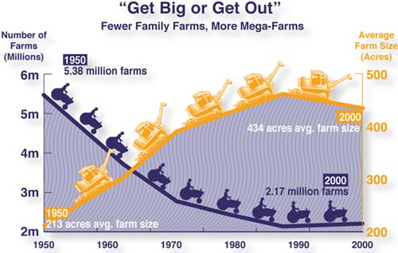

Like a mugger crouching in a dark alley, the U.S. farm bill thrives on obscurity. Cloaked by layers of jargon (“countercyclical loan”), homilies (“our nation’s agricultural heritage”) and distracting talk of conserving natural resources, it stiffs most farmers and bankrolls the most environmentally destructive forms of farming.
As debate over the 2007 farm bill heats up, public opposition to current federal farm policy (set to expire this September) is mounting. Yet the potential for real change remains limited, partly because of that obscurity. What’s needed is a plain-English guide to understanding farm policy - something that teases out the important issues, translates the jargon and rips the rhetorical curtain from high-sounding platitudes that justify rural devastation and corporate welfare. And that’s just what Daniel Imhoff has delivered with Food Fight: The Citizen’s Guide to a Food and Farm Bill.
Because the farm bill is so unwieldy - it combines everything from commodity support (subsidies) to food stamps - even the most committed food justice advocates often end up slack-jawed and befuddled. Imhoff comes to the rescue with a book as comprehensive as the farm bill itself, yet much more readable. It bristles with short, pithy essays and information-packed graphics.
Food Fight makes a key point that’s too often lost on advocates of reform: Although current farm policy is fundamentally flawed, we do need a collective agricultural support strategy. Activists rightly fume about the $20 billion or so that we spend propping up environmentally ruinous crops such as corn. But simply ending subsidies - without replacing them with investments in local food infrastructure and strategies that help farmers manage supply - will not clean up the environmental and social mess our food system has created over the past half-century.
This book will find a place on the desks of long-time and neophyte food justice advocates alike. The information it contains will help thwart the next legislative mugging.
|
 WATERSHED MEDIA The historical decline of small family farms. The new book Food Fight is an information-packed explanation of the complicated and important issues within U.S. farm policy. |
|
|